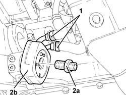

1084C10 STAFFA DI SUPPORTO DEL RADIATORE RAFFREDDAMENTO OLIO MOTORE - R.R.
- Path
- Procedures > 10 ENGINE UNIT > 1084 ENGINE LUBRICATION SYSTEM > 1084C ENGINE OIL COOLING CIRCUIT > 1084C10 STAFFA DI SUPPORTO DEL RADIATORE RAFFREDDAMENTO OLIO MOTORE - R.R.
- Kind
- repair procedure (removal / refitting; the operation number is the code)
- Applies to
- engines: 1.8 T.SPARK, 2.0 JTS; all production periods
- Interactive page
- https://sloeber94.github.io/elrnDB-aGt/en/#/125001165
Applies to: engines: 2.0 JTS; all production periods
 Removing
Removing
 Refitting
RefittingPosition the vehicle on a lift.
Make sure that the ignition key is in the OFF position, then disconnect the negative battery terminal (-)
Description | Connector | |
|---|---|---|
- | Battery | See A1B BATTERY ( BATTERY NEGATIVE ) |
Proceed with the removal
Op. 1016A40 IGNITION COIL COVER ON CYLINDER HEAD- R+R.
Proceed with the removal
Op. 7055B54 UNDER-ENGINE GUARD - R R.
Proceed with the removal
Op. 1076A48 CATALYTIC CONVERTER HEAT SHIELD - R R.
Proceed with the removal
Op. 1048A59 PIPE from flow meter to throttle casing hose - R.R..
Proceed with the removal
Applies to: engines: 2.0 JTS; all production periods
Refitting
RemovingProceed with the refitting
Proceed with the refitting
Op. 1048A59 PIPE from flow meter to throttle casing hose - R.R..
Proceed with the refitting
Op. 1076A48 CATALYTIC CONVERTER HEAT SHIELD - R R.
Proceed with the refitting
Op. 7055B54 UNDER-ENGINE GUARD - R R.
Proceed with the refitting
Op. 1016A40 IGNITION COIL COVER ON CYLINDER HEAD- R+R.
Connect the negative battery terminal (-).
Top up the engine oil lubrication system
Op. 0010T11 ENGINE OIL CHECK LEVEL AND TOP UP.
Refill the engine cooling system
Op. 0010T20 COOLANT CHECK DENSITY AND TOP UP IF NECESSARY.
Remove the vehicle from the lift.
Applies to: engines: 1.8 T.SPARK; all production periods
Removing
RefittingPosition the vehicle on a lift.
Proceed with the removal
Op. 1084B30 ENGINE OIL FILTER R R.
1. Disconnect the lower coolant outlet hose from the radiator and drain the engine cooling system.

Applies to: engines: 1.8 T.SPARK; all production periods
1. Loosen the collars fastening the coolant input and outlet sleeves to the engine oil heat exchanger
2. Undo the pin (2a) and remove the engine oil heat exchanger (2b).

Applies to: engines: 1.8 T.SPARK; all production periods
Refitting
RemovingPlace the engine oil heat exchanger in its housing and secure it using the pin.
Tighten the collars fastening the coolant input and outlet sleeves to the engine oil heat exchanger
Connect the lower coolant outlet hose from the radiator and drain the engine cooling system.
Proceed with the refitting
Op. 1084B30 ENGINE OIL FILTER R R.
Refill the engine oil lubrication system
Op. 0010T11 ENGINE OIL CHECK LEVEL AND TOP UP.
Refill the engine cooling system
0010T20 LIQUIDO RAFFREDDAMENTO MOTORE - Sost.
.
Remove the vehicle from the lift.
Topics linked from this page (8)
- 0010T11 ENGINE OIL CHECK LEVEL AND TOP UP
- 0010T20 COOLANT CHECK DENSITY AND TOP UP IF NECESSARY
- 1016A40 IGNITION COIL COVER ON CYLINDER HEAD- R+R
- 1048A59 PIPE from flow meter to throttle casing hose - R.R.
- 1076A48 CATALYTIC CONVERTER HEAT SHIELD - R R
- 1084B30 ENGINE OIL FILTER R R
- 1084C12 SCAMBIATORE DI CALORE OLIO MOTORE COMPLETO DEI TUBI DI ENTRATA E USCITA LIQUIDO DI RAFFREDDAMENTO - S.R.
- 7055B54 UNDER-ENGINE GUARD - R R